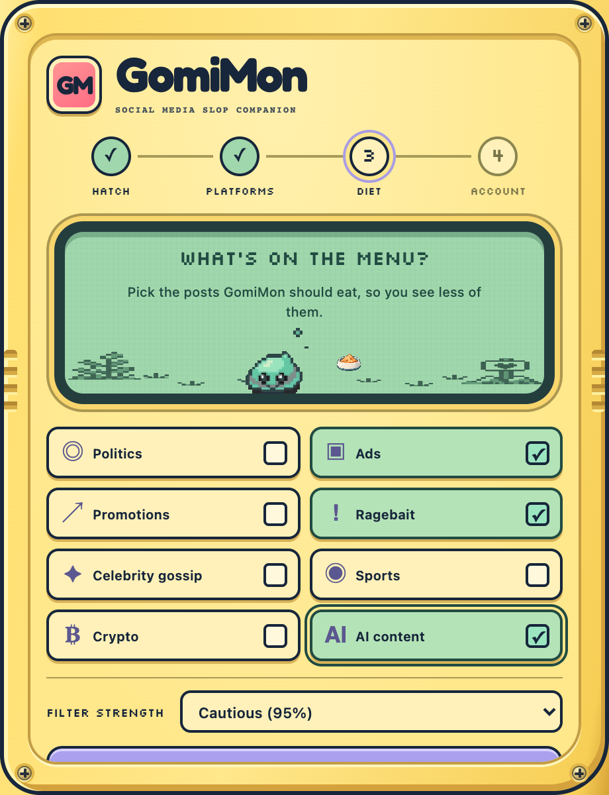

You set the menu
Choose what leaves your feed.
Pick the posts GomiMon should eat, and set how cautious it should be.
Ragebait
,
ads
, and
AI-written
posts
Topics like
politics, crypto, sports
, and
celebrity gossip
Change its diet anytime in Settings

Marked ads are detected locally. AI and topic checks need Google sign-in.